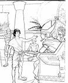

Hapo Mwanzo...

Adamu na Hawa
Jina la kitabu cha kwanza katika bibilia ni Mwanzo maana yake mwanzo. Milango miwili ya kwanza kwatika kitabu cha Mwanzo inatuambia vile Mungu aliumba ulimwengu wote, ulimwengu na sayari zote na viumbe wote wanaoishi walioko na wale waliokuwa. viumbe vya thamani kwa Mungu ni mwanadamu. Watu ni wa maana sana kwa sababu wameumbwa kwa sura ya Mungu ona katika kitabu cha Mwanzo 1:26-27.

Mlango wa tatu katika kitabu cha Mwanzo kinatuambia vile dhambi iliingia ulimwenguni. Adamu na Hawa mwanaume wa kwanza na mwanamke wa kwanza walijaribiwa kuamini kuwa Mungu aliwadanganya. Kwa kuamini uongo huu waliamini kuwa wanaeza kuwa kama Mungu. Mungu alipoona wamekosa kutii. Adamu na hawa hawakufurahia ule uhusiano bayana na Mungu waliokuwa nao awali. Dhambi iliwatenganisha na Mungu na imekuwa hivyo kwa kila mtu. Hakuna mtu aliyeishi tangu huo wakati. sisi wote tumetenganishwa na Mungu.

Mlango wanne na tano katika kitabu cha Mwanzo inaelezea hadithi ya huzuni kuhusu ongezeko la uovu wa mwanadamu. Mungu hakuwa ametupa amri zake kwa kuishi vizuri. Watu walienenda vile ilivyowapendeza. Ustaarabu wote ulikuwa juu ya vita na uasherati wa njia zote. Kuona hali ya kusitikisha ya kiumbe wake wa hali ya juu aliyofanya Mungu akajuta kuwa aliumba mwanadamu anayeweza kuyatenda hayo yote.

Nuhu
Mungu alipoangalia chini kwa viumbe wake wenye dhambi. Akampata mtu mmoja aliyetembea na Mungu: Mungu akaamua kufagia wanadamu wote na kuanza vizuri na Nuhu na familia yake mlango wa sita mpaka nane kitabu cha mwanzo kinazungumzia vile Mungu aliangamiza wanadamu wote kwa ghalika kumwokoa Nuhu peke yake na bibi yake na wanawe watatu.
Mlango wa tisa mpaka kumi na mmoja kitabu cha Mwanzo kinazungumzia vile dunia ilianza kuongezeka kwa idadi ya viumbe baada ya ghalika ya Nuhu kupitia wanawe Nuhu ambao ni; Shemu, Hamu na Japheti. Mwishoni mwa mlango tunaambiwa juu ya mtu muhimu sana.

Abrahamu
Katika kitabu cha mwanzo biblia inazungumzia juu ya watu waliotembea na Mungu kama Nuhu. Kutembea na Mungu kunahitaji imani. na kuamini bila maswali kuwa Mungu atatenda kile aliahidi kutenda. Iligharimu imani kuu Nuhu kuamini kuwa Mungu ataangamiza dunia yote na vilivyomo kwa ghalika na kufuata masharti ya Mungu kwa kutengeneza safina (boti kubwa). Watu waliomzunguka walimdharau vile aliendelea kufanya kazi.
Katika Mwanzo kumi na mbili tunajifunza kuhusu mwanaume mwingineambaye Mungu aliitaji Imani kuu: Abrahamu.
Mungu mwengine alihuliza jambo kubwa kwa Abramu (Mungu baadae akabadilisha jina lake kuwa Abrahamu) aliuliza Abrahamu kutoka nchi yake na kwenda mahali hajawaiona. Mahali hamjui mtu. kwa kunyenyekea kwake Mungu akampa ahadi mbili.
- Kuwa atapeana nchi ya kanani (wale wanaitwa Israeli sasa) kwa Abrahamu na kizazi chake.
- Kuwa nchi kuu itatoka kwa kisasi cha Abrahamu.
Akilini mwa Abrahamu hizi hadi zote lazime ziwe na shida na wao. Shamba la kanani wakati huo lilikuwa na linamilikiwa na watu wengine tofautitofauti na Abrahamu na bibi yake hawakuwa na mtoto na bibi yake Sarah alikuwa amezeeka sana kupata watoto bado Abraham alikuwa na imani kwa hivyo yeye na nyumba yake wakatoka kwenda Kanani.
Ukisoma hadithi ya Abrahamu katika kitabu cha mwanzo 12-23 unaona kuwa imani ya Abrahamu haikuwa imekamilika wakati mwingine alichukulia mambo mikononi mwake badala ya kumngoja Mungu kwa wakati wake bado tunasoma katika mwanzo 15:6 Abrahamu alimwamini Mungu na akamtukuza kwa utakatifu.
Hata kama ilifika wakati ambao mambo sio rahisi ha kama hatuoni njia Mungu anatuhimiza kuwa na Imani kwake.

Kama vile Mungu aliahidi Sarai alipata mtoto wa kuime. Yeye na Abrahamu wakamwita Isaka. Sarai alifurahia kwa kuwa na mtoto hata katika uzee wake.
Isaka alipokua mtu mzima alioa akawa na wanawe wawili wa kiume, Yakobo na Esau kupitia yeye.
Yakobo akawa na wana wa kiume kumi na wawili. Ukisoma kitabu cha (Mwanzo 35:23-26) utapata majina ya wana wa Yakobo. Mungu alibadilisha jina la Yakobo kuwa Israeli- Mwanzo 35:10 kupitia hawa wana kumi na wawili, Mungu akakamilisha ahadi yake kwa Abrahamu kumtengeneza taifa kubwa la watu.
Musa
Mmoja wa wana wa Yakobo, alienda Misri na akawa afisaa mkubwa katika korti yafarao (unawezaisoma katika kitabu cha mwanzo 37-50 ni hadithi ndefu lakini ni vizuri kuitarii). Mwishowe wana wa Yakobo kumi na mmoja wote walihamia Misri pia. Kama vile Yusufu alikuwa hai familia yake iliishi vizuri kwa sababu ya kujulikana kwake kwa farao.
Baada ya Yusufu kufa, vizazi vingine vilizaliwa na farao mpya akaja mamlakani asiyejua kuwa Yusufu alikuwa na kibali kwa familia ya utawala. Huyu farao mpya aliona kuwa hawa ni Waebrania. (Waisraeli) watu wa waebrania walikuwa wameongezeka sana, akaogopa kuwa wanaweza kuipindua serikali yake akafanya Waisraeli wote (Wayaudi) watumwa Misri.

Katika Kutoka 2:23 bibilia inatwambia kuwa Waisraeli waliteseka sana kama watumwa wa Misri. Wakamlilia Mungu kuwaokoa na Mungu akawasikia. Akachagua mwanaume kutoka kwa Waebrania kusaidia kuwaokoa Waisraeli kutoka kwa utumwa. Jina la huyu mwanaume ni Musa.
Tofauti na Abrahamu ambaye aliitikia mwito wa Mungu. Musa alijaribu kwanza kumsihi Bwana amtumie mtu mwingine (kutoka 4:1-14). Mungu alimwonyesha Musa kuwa si yeye balmkono wa Mungu ambao utamshurutisha Farao kuwajilia huru wayahudi watumwa, Na Mmjumbe wa Mungu.
Pale Misri waliabudu miungu mingi sio Mungu wa Abrahamu, Isaka na Yakobo. Musa alipomfikia farao, farao alimkemea akiuliza ‘ ni Mungu yupi huyo nafaa kufaa kumtii?’
Musa akarudi kwake kumsihi kwa mara ya pili kama farao awaruhusu Waebrania watumwa. Wakati huu hata hivyo, Musa alikuja na onyo kutoka kwa Mungu: Ikiwa Farao angeweza kukubali kuwaruhusu wana wa Israeli Mungu aliruhusu mfululizo wa mapigo tisa kwa Wamisri, mapigo kuharibu, magonjwa na giza. cha ajabu ni kuwa hata baada ya matokeo yakutisha kwa haya mapigo yote. Farao bado alikataa kuamini nguvu za Mungu na hangewaruhusu Waebrania kuondoka. (Kutoka 7:15, Kutoka 11).
Ni baada ya pigo la kumi (Kutoka 12) Farao mwishowe alikubali kuachilia watumwa wa Misri. Mzaliwa wa kiume wa kwanza kwa kila boma kwa boma ya Misri aliuawa. Bali Mungu aliwaokoa wazaliwa wa kiume wa kwanza kwa boma ya Waebrania. Aliwaamrisha kutoa dhabihu mwanakondoo na kupaka damu kwa milango ya nyumba zao.
Mpaka leo hii waebrania wanasherehekea sikukuu ya pasaka kila mwaka kukumbuka miujiza uliowasaidia kutoka kwa Utumwa.
Kwa uongozi wa Musa Waebrania wakaanza safari kutoka Misri hata baada ya yote yaliyofanyika Misri kwa mkono wa Mungu Farao akajaribu tena waweka Waebrania katika utumwa.

Jeshi la Misri liliwafuata wana Waisraeli kwenda kwa bahari ya Shamu wakifikiria wamewafungia baharini (Kutoka 14). Waisraeli wakaanza kuogopa lakini Musa akawasihi kuwa na imani kwa Mungu wao. Mungu alimwamrisha Musa kuinua fimbo yake juu ya maji. Kimiujiza maji katika bahari ya Shamu yakatawanyika, ikatangeneza njia, nchi kavu iliyowaruhusu kuvuka kwenda ng’ambo nyingine. Jeshi la Farao lilipojaribu kuvuka kupitia njia ileile, maji yalianguka kutoka pande zote na ikawazamisha wote. Mwishowe wana wa Israeli walitoka Misri wakawa huru kutoka kwa utumwa.
Na vile mungu alikuwa amemwambia Musa wakati wa kwanza alimwita, ulikuwa mkono hodari wa Mungu huo.

Amri Kumi za Mungu
Vile huwa tunasoma kuhusu gharika kubwa Mungu hakua amepeana sharia zake kwa mwanadamu wakati Waebrania walianza safari kwenda kwa nchi Mungu aliahidi Abrahamu na kizazi chake, Mungu akaamrisha Musa kupanda mlima Sinai.
Pale mlima ulikuwa umefunikwa na moshi kuzuia watu kutoka utukufu mkuu wa Mungu. Musa alipokea sheria za Mungu kwa watu wake. (Kut 20:1-17).
Kwa sababu Waebrania hawakuwa kwa utumwa tena pale Misri. Haimanishi kuwa shida zao zote zilikuwa zimeisha. Hadithi ya safari yao mpaka kwa nchi Mungu aliwaahidi ilichukuwa miaka arobaini!
DImani ya Waisraeli ilikuwa ndogo sana. Hata walishuku kuwa Mungu atawapa mahitaji yao. Wakati mwengine walikufa moyo sana. Waliongea juu ya kurudi Misri hata mbaya zaidi walitengeneza miungu ya kuabudu kwa sababu walimshuku Mungu sana.
Hadithi ya kifo cha Musa imerekodiwa katika mlango wa 34 kumbukumbu ya Torati.Ni katika kitabu hiki Kumbukumbu ambapo Mungu anaelezea juu ya sheria aliyowapa watu wakekatika mlima wa Sinai. Anachanganua jinsi watu wanastahili kuenenda wao kwa wao, wayahudi na jinsi ya kumwabudu Mungu.